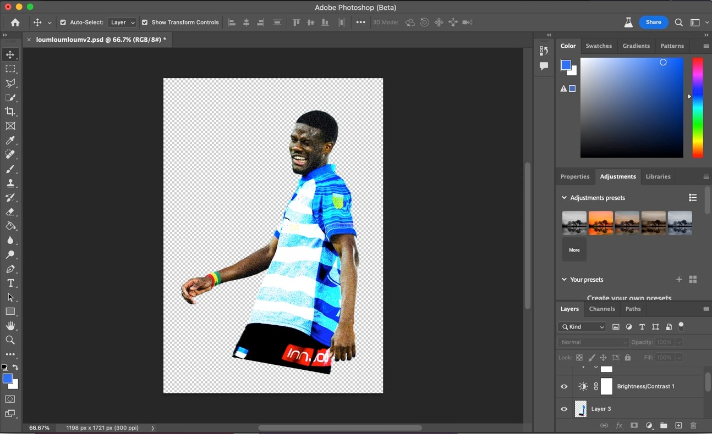
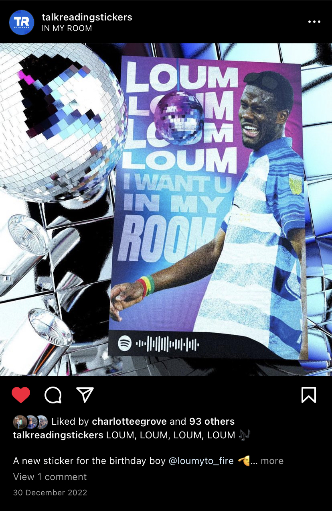

'Talk Reading' Stickers (Instagram: @talkreadingstickers)
Project Outline Statement
Background: Talk Reading Stickers is a small business run alongside myself and members of the Reading FC community. The idea was created following the start of struggles with the clubs performances. In an effort to raise spirits and get Reading fans celebrating the club, we decided to start releasing custom stickers that glorify players, managers and chants that have become synonymous with the Reading fanbase. We noticed a gap in this market and filled it with creative designs at a low cost for customers. The idea that fuelled this creation was a goal for fans to travel the world and post pictures on social media of locations where they have 'stuck' their stickers.
Date & Duration:
- March 2021 - Present
Stickers Development
I have personally created all of the sticker designs myself using both Illustrator and Photoshop. We have thought up design ideas as a collective and also by using public polls to help understand what the customer would want. I would then take an initial idea and build a creative design that would appeal to the Reading fanbase. In this particular case we have taken a former Reading player "Mamadou Loum" and created a design centred around a song/chant that is related to his name.
In the above and below images you can see how image manipulation alongside vector graphics has produced a colourful design that plays to the theme of pop/dance music. This player has a chant that runs to the song "Boom, Boom, Boom, Boom" by Vengaboys and I wanted to make sure the essence of that song carries through to the design. Another feature I added to the design was the Spotify code (shown in the bottom left of the sticker design). This allowed passers by to scan the code on the sticker and play the song there and then on their phone. It takes visual media and applies a unique audio experience providing customers with the chance to interact with their sticker.

Promotion & Outcome
One key element of the product release is the marketing approach. We wanted to make sure there was an awareness of our product amongst Reading fans. This would help sell our product and grow our brand. The images and videos below take you through some of our many examples of marketing material we have released.
Since the release, the stickers have proved very popular. Our designs have been posted across the globe to more than 30 different countries. We have released multiple batches of designs that have included 19 seperate designs. We have now sold well over 10,000 stickers to our fanbase and we plan to continue our progress into the future. Alongside this success we have also had past and current players share and order stickers from us. Including one season where the Reading team at the time were posting stickers around the dressing room during training and matchdays.
To help support the release of stickers we have created animated videos. These videos provide sneak peak previews of the upcoming designs. It also offers an alternative piece of media that jumps off the screen and creates a more enticing experience for followers and fans. In order to increase anticipation we also run free giveaways for our followers. This is a great technique to help spread awareness of our product. Fans and followers are able to have the chance to win a free pack of stickers if they follow our account and share our stroy across their socials. This helps bring up anticipation for our product whilst also growing our brand.
Shown below is an example of a sticker release image. This displays the new batch title alongside the latest designs to be released.

The Final Sticker:
Shown below is the final marketed image of the "Mamadou Loum" sticker. In this particular marketing design I used Adobe Dimension to create a 3D disco experience which would reflect the theme of the sticker.
As stated in the project description, our main goal was to stick our stickers across the world. Over the past few years we have now ticked off a number of countries. The image below displays our stickers in Paris, New York and Venice. It has been amazing to see how much our stickers have spread and the interaction it has gathered with fans.

List what I learned from this project
- Areas of the law, including using images legally within designs that are set for resale. This was very important information for me to understand in order to respect the work that photograhers create and to provide credit where it is due.
- Developed further experience in producing designs that were fit for CMYK printing. Making sure that colour and design quality would be consistent.
- How to work with and sell to the general public/specific audiences. It takes a great deal of skill and knowledge to understand public opinion and to make effective marketing and product design decisions that are in line with public/fan base opinion.
- How to work with suppliers and printers to help produce a quality product. During this project we worked with outsourced printers. I had to regularly communicate with them to understand cost and product decisions that would impact the quality of our product.
- How to interact with customers to deliver a quality customer service. We regularly had cases where orders were sent out to customers but never received. In those cases we were quick to resolve the issues and regularly offered free sticker packs to keep customers happy.